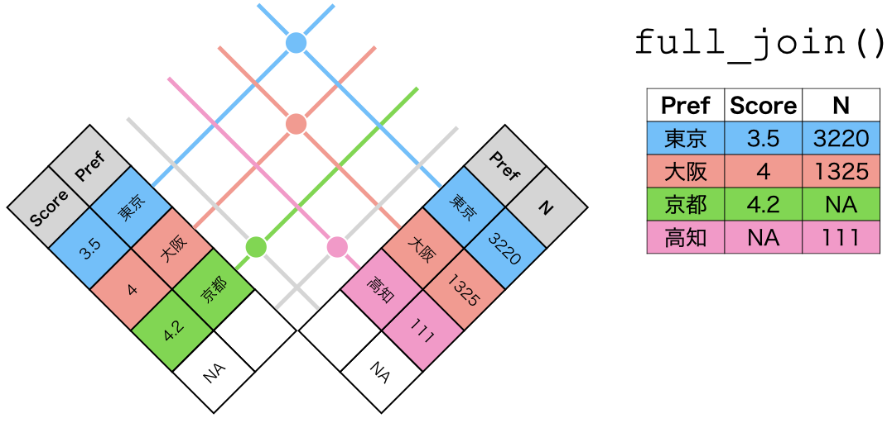
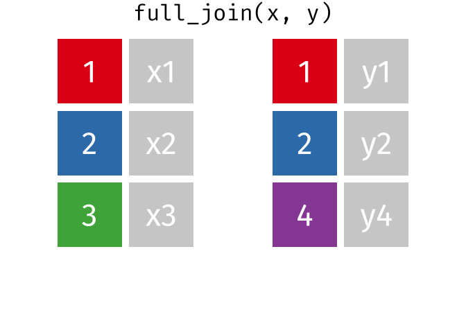

第11回講義資料
データハンドリング (3)
スライド
データの結合
実習に使用する{tidyverse}パッケージも読み込んでおく。
行の結合
複数のtibble（またはdata.frame）を縦に結合する場合は、bind_rows()を利用する。たとえば、以下のような2つのtibble（またはdata.frame）があるとする。
2つのtibble（またはdata.frame）は同じ変数名を共有しているため、縦に積み重ねることができる。このようにデータを縦に結合する時にはそれぞれのtibble（またはdata.frame）の変数名が一致する必要がある。今回の例では以下の例はいずれのtibble（またはdata.frame）もID、Name、Scoreで構成されている。ただし、ID、Name、Scoreの順番は一致しなくても良いが、上のtibble（またはdata.frame）の順番に調整される。bind_rows()の使い方は簡単である。bind_rows()の中に結合するtibble（またはdata.frame）のオブジェクト名を入れるだけだ。
ID Name Score
1 1 Aさん 77
2 2 Bさん 89
3 3 Cさん 41
4 4 Xさん 98
5 5 Yさん 78 このData1とData2がそれぞれ1組と2組の学生データだとしよう。結合後はどの生徒がどの組に所属しているかが分からない。結合と同時に各tibble（またはdata.frame）の識別変数を追加するためには結合するデータをlist()でまとめ、.id引数を追加する。ただし、list()の内部では以下のように"識別変数の値" = 結合するデータと定義する必要がある。
Class ID Name Score
1 1組 1 Aさん 77
2 1組 2 Bさん 89
3 1組 3 Cさん 41
4 2組 4 Xさん 98
5 2組 5 Yさん 78 .idで指定した名前の変数が第1列として追加され、それぞれどの組のデータであるかが分かるようになる。
列の結合
一方、データを横に結合することはいくつかのバリエーションがある。これらの作業は*_join()関数を使用する。ここで重要なのは結合に使う識別用の変数（キー変数）が必要ということであり、以下の例ではCityはキー変数である。
この2つのデータを結合する時にはleft_join()、right_join()、inner_join()、full_join()などを使用するが、いずれも使い方は同じである。まず、結合する2つのtibble（またはdata.frame）のオブジェクト名を入力し、by = "キー変数名"の引数を追加する。
City Pop Area Food
1 Tokyo 927 2194 Ramen
2 Osaka 148 828 Takoyaki
3 Kochi 76 7104 Katsuo ただし、キー変数は両データに含まれているが、一致しないケースがある。たとえば、以下の例ではCityとToshiがキー変数である。
この場合、by = c("データ1のキー変数名" = "データ2のキー変数名")と指定する必要がある。
City Pop Area Tabemono
1 Tokyo 927 2194 Ramen
2 Osaka 148 828 Takoyaki
3 Kochi 76 7104 Katsuo それでは4種類の*_join()関数についてそれぞれの特徴を見てみよう。
まず、left_join()はデータ1を温存させる関数である。たとえば、上の例だと、データ1には東京、大阪、高知が、データ2には高知、大阪、京都のデータが含まれている。大阪と高知は問題なく結合できるが、余っているデータ1の東京、データ2の京都はどうなるだろうか。left_join()を使う場合、データ1の東京が温存される。ただし、データ2に東京のデータがないため、東京のTabemonoは欠損値（NA）で埋められる。


一方、right_join()はデータ2が温存される。つまり、京都の行が残り、京都のPopとAreaは欠損値となる。


inner_join()は両データに同時に存在する行のみが結合対象となるため、大阪と高知の行のみが結合される。


最後に、full_join()はデータ1とデータ2すべてを温存させ、欠損しているセルは欠損値（NA）で埋められる。


それでは以下のデータで実際に比較してみよう。
それぞれの*_join()関数の動きを実際に確認してみよう。
キー変数が複数あることもある。たとえば、以下のように分析の単位（=行）が地域\(\times\)年度である可能性もあろう。
Code 15-a
# A tibble: 9 × 3
Country Year GDP
<chr> <dbl> <dbl>
1 A 2020 100
2 A 2021 150
3 A 2022 200
4 B 2020 100
5 B 2021 120
6 B 2022 120
7 C 2020 200
8 C 2021 180
9 C 2022 90Code 15-b
# A tibble: 9 × 3
Country Year Pop
<chr> <dbl> <dbl>
1 A 2020 1000
2 B 2020 8000
3 C 2020 5000
4 A 2021 1100
5 B 2021 7000
6 C 2021 6000
7 A 2022 1100
8 B 2022 8000
9 C 2022 7800 この場合、Country、またはYearのみをキー変数として使うのではなく、両方をキー変数として使う必要がある。複数のキー変数を指定するときにはby = c("キー変数1", "キー変数2")のように指定する。
整然データ構造
Tidy dataとはHadley Wickhamが提唱したデータ分析に適したデータ構造であり、日本語では整然データ、または簡潔データとも訳される。整然データはパソコンにとって読みやすいデータであり、Rにおける多くの分析はこの整然データを基づいて行われる。ただし、パソコンにとって読みやすいデータが必ずしも人間にとって読みやすいデータであることを意味するわけではない。2つが一致する場合もあれば、一致しない場合もある。{tidyr}パッケージは整然ではないデータ（=雑然データ）を整然データへ変形するパッケージであり、次回紹介する{ggplot2}は整然データを前提として開発されたパッケージである。
4つの原則
整然データには4つの原則がある。
- 1つの列は、1つの変数を表す
- 1つの行は、1つの観測を表す
- 1つのセルは、1つの値を表す
- 1つの表は、1つの観測単位をもつ
以下ではそれぞれの原則について解説する。
原則1: 1列1変数
これは1つの列は1つの変数を意味するといった、一見当たり前のように見える原則であるが、実は雑然データのほとんどは、この原則1を満たしていない。たとえば、以下のようなデータを考えてみよう。これは3人の被験者に対し、薬を飲む前後の数学成績を測定したデータである。このデータを構成する変数は、被験者名、処置の前後、数学成績の3つである。薬を飲む前の数学関席はControl列、薬を飲んだ後の数学成績がTreatment列である。

このデータの問題は「数学成績」といった一つの変数が2列に分かれていることである。実はこのデータは以下の原則2も満たしてない。原則2を満たしていないデータはほとんど原則1を満たしていないケースが多い。
原則2: 1行1観察
1行に1つの観察が入るということも当たり前のように思える。しかし、「1つの観察 = 1つの値」を意味するわけではない。先ほどのデータもそれぞれのセルには1つの値のみ入っている。ここでの「観察」とは観察単位ごとに測定された値の集合であり、観察単位は人、企業、国、時間などがある。このデータの観察単位は「人」ではない。今回のデータにおける観察単位は「人 \(\times\) 時間」である。たとえば、「投薬前のXさんの数学成績」が一つの観察である。しかし、以下の左側のデータは一つの行にある学生の投薬前の数学成績と投薬後の数学成績、つまり2つの観察が混じっていることとなる。

原則3: 1セル1値
1つのセルに1つの値のみが含まれるといった原則3は、これに反するケースは多くない。以下のように「Hadleyさんは投薬前後で数学成績が変わらないから、一つのセルにまとめよう」といったことはめったにないだろう。

しかし、一部の例外も存在する。たとえば、1つのセルに2020/8/24という値があるとしよう。このセルには「年」と「月」、「日」といった3つの値が含まれている。分析の目的によっては年月日を全て異なるセルに割り当てる必要もあるが、このままで問題とならないケースもある。分析単位が日であれば、このままで問題ないが、分析単位が「年\(\times\)月\(\times\)日」であれば、3つのセルに分ける必要があろう。
原則4: 1表1単位
最後の原則4は1つの表は1単位を表すことである。実は1つの表に複数の分析単位が含まれるケースがかなり多い。以下の図は政府統計の例であるが、1つの表に「国」、「都道府県」、「市区町村」、「行政区」の単位が混在していることが分かる。

また、最後の行に「合計」や「平均」が入るケースも多い。最後の行以外は個人が単位であるが、最後の行のみクラスになっている。「1表1単位」原則を満たさない場合、filter()関数等で、異なる単位の行を除外することができる。

{tidyr}パッケージ

{tidyr}パッケージは雑然データから整然データへ変形をサポートするパッケージである。主に使う関数は以下の3つである。
| 関数名 | 機能 |
|---|---|
pivot_longer() |
Wide型データ \(\rightarrow\) Long型データ |
pivot_wider() |
Long型データ \(\rightarrow\) Wide型データ |
separate() |
セルの分割（例:「年月日」から「年」、「月」、「日」へ） |
それでは、LMSから実習用データ（covid_sample.csv）をダウンロードし、読み込んでみよう。このデータは中国、日本、韓国、モンゴル、台湾（アルファベット順）の5日間COVID-19新規感染者数データであり、Johns Hopkins University Center for Systems Science and Engineeringから入手したものである。
# A tibble: 5 × 7
Country Population `2022/06/09` `2022/06/10` `2022/06/11` `2022/06/12`
<chr> <dbl> <dbl> <dbl> <dbl> <dbl>
1 China 1447470092 819 848 1114 990
2 Japan 126476461 16788 15584 15338 13381
3 Korea 51269185 9304 8428 7382 3828
4 Mongolia 3278290 0 0 0 0
5 Taiwan 23816775 72846 68293 79616 50567
# ℹ 1 more variable: `2022/06/13` <dbl>このデータは整然データだろうか、あるいは雑然データだろうか。まずは、本データの観察単位を明らかにする必要がある。これらのデータは「時点XにおけるY地域の新規感染者数と人口」を測定したものである。したがって、このデータの観察単位は「地域\(\times\)時間」であり、測定されたものは新規感染者数と人口である。したがって、整然データであるためには、「地域名」、「時間」、「人口」、「新規感染者数」の4つの変数で構成される必要がある。一方、現在のデータでは新規感染者数が5列に渡って格納されており、計7列のデータである。
このデータを整然データに変えるには、7列のデータを4列のデータに変形する必要がある。2つのデータが同じ情報を持つのであれば、列が多いデータは行が少なく、行が多いデータは列が少なくなるはずである。ここで相対的な横長のデータをwide型、縦長のデータをlong型と呼ぶ。今回の場合はwide型データをlong型データへ変換する必要があり、多くの雑然データの扱いはwide型\(\rightarrow\)long型の整形が必要となる。
ここで使う関数がpivot_longer()関数である。使い方は以下の通りである。
我々がやりたい作業は2022/06/09列から2022/06/13列までの5列を1つの列としてまとめることである。まとめる列はcols引数で指定する。そして、これまで変数名だったもの（たとえば、2022/06/11など）が入る新しい列名と、値が入る新しい列名を、それぞれnames_toとvalues_toで指定する。ここでは時点はDate、新規感染者数はNew_Casesという列として格納するとしよう。注意すべき点としては、これらの新しい変数名は"で囲むことである。
ただし、colsの場合、"で囲んでも、囲まなくても良い。ただし、列名に記号が入っていたり、数字で始まる列名は"で囲む必要がある。また、colsでは隣接した列を選択する:やstarts_with()なども使用可能である。
Code 19
# A tibble: 25 × 4
Country Population Date New_Cases
<chr> <dbl> <chr> <dbl>
1 China 1447470092 2022/06/09 819
2 China 1447470092 2022/06/10 848
3 China 1447470092 2022/06/11 1114
4 China 1447470092 2022/06/12 990
5 China 1447470092 2022/06/13 957
6 Japan 126476461 2022/06/09 16788
7 Japan 126476461 2022/06/10 15584
8 Japan 126476461 2022/06/11 15338
9 Japan 126476461 2022/06/12 13381
10 Japan 126476461 2022/06/13 7942
# ℹ 15 more rows逆に、long型データをwide型データへ整形する際はpivot_wider()を使用する。雑然データはwide型データが多いとは既に説明したが、雑然データの方が人間にとっては読みやすい場合もある。上の新型コロナのデータもwide型の方が読みやすい人もいるだろう。データ分析に適したデータは整然データであるが、報告に適したデータとしては必ずしもこの関係は成立しない。図表を作成する際は常に読む側の立場から考える必要があろう。
このpivot_wider()関数の使い方はpivot_longer()の類似している。names_toとvalues_toがそれぞれnames_fromとvalues_fromに変わっただけである。
# A tibble: 5 × 7
Country Population `2022/06/09` `2022/06/10` `2022/06/11` `2022/06/12`
<chr> <dbl> <dbl> <dbl> <dbl> <dbl>
1 China 1447470092 819 848 1114 990
2 Japan 126476461 16788 15584 15338 13381
3 Korea 51269185 9304 8428 7382 3828
4 Mongolia 3278290 0 0 0 0
5 Taiwan 23816775 72846 68293 79616 50567
# ℹ 1 more variable: `2022/06/13` <dbl> 以上のpivot_longer()とpivot_wider()の関係を示したものが以下の画像です。

最後にセルの値を分割するseparate()関数について解説する。たとえば、月や曜日ごとの新規感染者数をまとめようとした場合、時点の列が「YYYY年MM月DD日」になっていては困る。これらの年、月、日に分割する必要があろう。先ほど作成したCOVID_LongのDate列をYear、Month、Dayに分けてみよう。
colは分割する列の名前を、intoには分割後の列名を、sepは分割の区切りとなる記号などを指定する。
"2022/10/08"の場合、"/"で分ければ、"2022"、"10"、"08"に分割されるだろう。これあらをそれぞれ、Year、Month、Dayといった3つの列に分割してみよう。
# A tibble: 25 × 6
Country Population Year Month Day New_Cases
<chr> <dbl> <chr> <chr> <chr> <dbl>
1 China 1447470092 2022 06 09 819
2 China 1447470092 2022 06 10 848
3 China 1447470092 2022 06 11 1114
4 China 1447470092 2022 06 12 990
5 China 1447470092 2022 06 13 957
6 Japan 126476461 2022 06 09 16788
7 Japan 126476461 2022 06 10 15584
8 Japan 126476461 2022 06 11 15338
9 Japan 126476461 2022 06 12 13381
10 Japan 126476461 2022 06 13 7942
# ℹ 15 more rowsもし、区切りとなる記号が存在しない場合は、正規表現（regular expression; 「正則表現」とも訳される）の知識が必要となる。テキスト分析に興味があるなら必須の知識であるが、本講義の射程外である。ここでは都道府県と市区町村を分けるサンプルコードのみ紹介する。
Code 23
# A tibble: 4 × 2
City Pop
<chr> <dbl>
1 北海道音威子府村 693
2 大阪府高槻市 347424
3 広島県府中市 36471
4 鹿児島県指宿市 38207Code 24
# A tibble: 4 × 3
Pref City Pop
<chr> <chr> <dbl>
1 北海道 音威子府村 693
2 大阪府 高槻市 347424
3 広島県 府中市 36471
4 鹿児島県 指宿市 38207{tidyr}と{dplyr}
これまでの例で見てきたように、{tidyr}の各関数を通して得られた結果はいずれもtibble構造（data.frameとほぼ同じ）である。また、{tidyr}の各関数の第一引数はtibble（またはdata.frame）である。これは{tidyr}と{dplyr}を組み合わせることが可能であることを意味する。つまり、{tidyr}の関数から{dplyr}の関数、またがその逆の方向でパイプ演算子を使うこともできる。たとえば、今回の実習データをlong型へ整形し、100万人当たりの新規感染者数をNew_Case_per_1Mという列として格納し、国・地域（Country）ごとにNew_Case_per_1Mの平均とを計算する作業を、全てパイプで繋ぐこともできる。
Code 25
COVID_df |>
# Wide to Long
pivot_longer(cols = "2022/06/09":"2022/06/13",
names_to = "Date",
values_to = "New_Cases") |>
# 新規感染者数を人口であり、100万をかける
mutate(New_Case_per_1M = New_Cases / Population * 1000000) |>
# Countryでグルーピング
group_by(Country) |>
# New_Case_per_1Mの平均値を計算
summarise(New_Case_per_1M = mean(New_Case_per_1M))# A tibble: 5 × 2
Country New_Case_per_1M
<chr> <dbl>
1 China 0.653
2 Japan 109.
3 Korea 151.
4 Mongolia 64.4
5 Taiwan 2657. 教科書
- 『私たちのR: ベストプラクティスの探求』
- {tidyr}の公式ホームページ：https://tidyr.tidyverse.org/
- {dplyr}の公式ホームページ：https://dplyr.tidyverse.org/